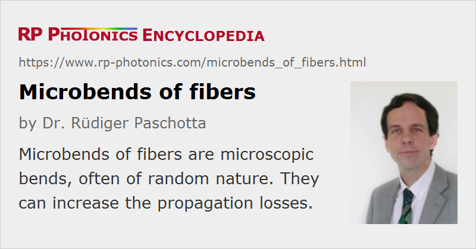

Microbends of Fibers
Definition: microscopic bends of optical fibers
German: Mikrobiegungen von Fasern
Category: fiber optics and waveguides
How to cite the article; suggest additional literature
Author: Dr. Rüdiger Paschotta
Microbends are microscopic bends of an optical fiber, which can cause bend losses (bend-induced propagation losses) even when the fiber is macroscopically kept straight. Also, they influence the polarization mode dispersion.
Microbends largely arise not during the process of pulling the fiber from the preform, but when the fiber is cabled or spooled. Of course, the amount of microbends depends strongly on the cabling or spooling technology. For modern telecom fibers, microbends are carefully minimized.
It is also possible to intentionally introduce microbends e.g. in order to realize a special kind of fiber Bragg grating [5].
Questions and Comments from Users
Here you can submit questions and comments. As far as they get accepted by the author, they will appear above this paragraph together with the author’s answer. The author will decide on acceptance based on certain criteria. Essentially, the issue must be of sufficiently broad interest.
Please do not enter personal data here; we would otherwise delete it soon. (See also our privacy declaration.) If you wish to receive personal feedback or consultancy from the author, please contact him e.g. via e-mail.
By submitting the information, you give your consent to the potential publication of your inputs on our website according to our rules. (If you later retract your consent, we will delete those inputs.) As your inputs are first reviewed by the author, they may be published with some delay.
Bibliography
| [1] | L. Jeunhomme and J. P. Pocholle, “Mode coupling in a multimode optical fiber with microbends”, Appl. Opt. 14 (10), 2400 (1975), doi:10.1364/AO.14.002400 |
| [2] | D. Marcuse, “Microdeformation losses of single-mode fibers”, Appl. Opt. 23 (7), 1082 (1984), doi:10.1364/AO.23.001082 |
| [3] | J. N. Blake et al., “Analysis of intermodal coupling in a two-mode fiber with periodic microbends”, Opt. Lett. 12 (4), 281 (1987), doi:10.1364/OL.12.000281 |
| [4] | V. Arya et al., “Microbend losses in singlemode optical fibers: theoretical and experimental investigation”, IEEE J. Lightwave Technol. 13 (10), 1998 (1995), doi:10.1109/50.469736 |
| [5] | In K. Hwang et al., “Long-period fiber gratings based on periodic microbends”, Opt. Lett. 24 (18), 1263 (1999), doi:10.1364/OL.24.001263 |
See also: bend losses, polarization mode dispersion, fibers, propagation losses
and other articles in the category fiber optics and waveguides
|  |
If you like this page, please share the link with your friends and colleagues, e.g. via social media:
These sharing buttons are implemented in a privacy-friendly way!